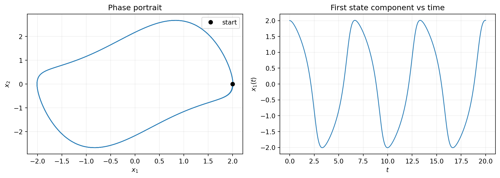
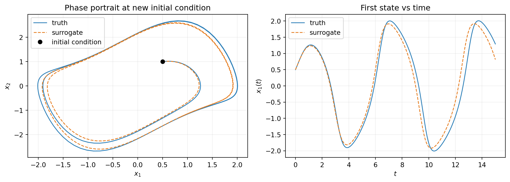
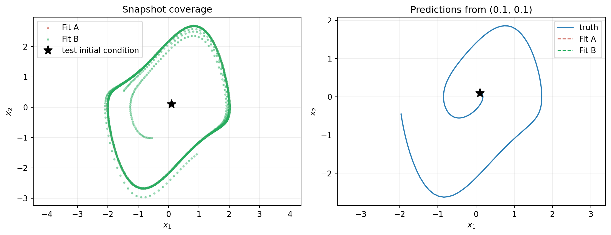

import numpy as np
import matplotlib.pyplot as plt
from scipy.integrate import solve_ivp
from pyapprox.util.backends.numpy import NumpyBkd
from pyapprox.probability import UniformMarginal
from pyapprox.surrogates.affine.basis import OrthonormalPolynomialBasis
from pyapprox.surrogates.affine.expansions import BasisExpansion
from pyapprox.surrogates.affine.expansions.fitters.least_squares import (
LeastSquaresFitter,
)
from pyapprox.surrogates.affine.indices import compute_hyperbolic_indices
from pyapprox.surrogates.affine.univariate import create_bases_1d
from pyapprox.surrogates.dynamical_systems import (
BatchedBoundODEResidual,
SnapshotDataset,
)
from pyapprox.ode.implicit_steppers.backward_euler import BackwardEulerAdjoint
from pyapprox.ode.implicit_steppers.integrator import TimeIntegrator
from pyapprox.util.rootfinding.newton import NewtonSolver
bkd = NumpyBkd()Derivative Matching: Learning an ODE Right-Hand Side
PyApprox Tutorial Library
Fit a polynomial basis expansion to snapshot pairs and use it as the right-hand side of an ODE for forward prediction at new initial conditions.
TipDownload Notebook
Learning Objectives
After completing this tutorial, you will be able to:
- Construct a
SnapshotDatasetfrom observed trajectory data using finite-difference derivative estimates - Choose a
BasisExpansionansatz appropriate for an ODE right-hand side - Fit the expansion to snapshot pairs with
LeastSquaresFitter - Wrap a fitted surrogate as an ODE residual with
BatchedBoundODEResidualand integrate forward in time - Diagnose fit quality from training residuals and validation trajectory error
- Recognize when poor data coverage makes the surrogate unreliable away from the training region
Prerequisites
This tutorial realizes the conceptual pipeline from Learning Dynamical Systems with concrete PyApprox classes. The Surrogate Modeling Workflow tutorial introduces the four-step ansatz-data-fit-assess pattern that we follow here.
Quick Recap
Dynamical-systems learning approximates the right-hand side \(f_{\params}\) of an ODE \(\dot{\state} = f_{\params}(\state, t, \boldsymbol{\mu})\) from snapshot pairs \((\inputs_i, \dot{\inputs}_i)\) extracted from observed trajectories. Derivative matching is the standard fitting objective: minimize the mean-squared error between predicted and observed derivatives at the snapshot points. When the surrogate is linear in its parameters (as a polynomial basis expansion is), the minimization is a single linear least-squares solve.
In this tutorial we walk the four-step pipeline end to end on the Van der Pol oscillator at fixed \(\mu = 1\):
\[ \dot x_1 = x_2, \qquad \dot x_2 = \mu\,(1 - x_1^2)\, x_2 - x_1. \tag{1}\]
We observe trajectories of this system, fit a polynomial basis expansion to the resulting snapshots, wrap the fit as an ODE residual, and integrate from a new initial condition not seen in training. The parametric case \(\mu \in [0.5, 2]\) is the subject of the next tutorial.
Setup
Imports and backend declaration:
Step 1: Observe a Trajectory
In a real workflow, trajectory data comes from an expensive simulator that we want to amortize. Here we manufacture the data by integrating Equation 1 with a high-order method (scipy’s RK45) so the “truth” is clean and we can isolate surrogate-fitting error from integration error later.
def true_vdp_trajectory(initial_state, times):
"""Integrate the Van der Pol oscillator at mu=1 with scipy RK45."""
def rhs(t, y):
return [y[1], 1.0 * (1 - y[0] ** 2) * y[1] - y[0]]
sol = solve_ivp(
rhs, [times[0], times[-1]], initial_state,
t_eval=times, method="RK45", rtol=1e-10, atol=1e-12,
)
return bkd.array(sol.y)
# One observed trajectory starting from (2, 0).
times = bkd.linspace(0.0, 20.0, 401)
trajectory = true_vdp_trajectory(
initial_state=[2.0, 0.0], times=bkd.to_numpy(times),
)
print(f"Trajectory shape: {trajectory.shape}")Trajectory shape: (2, 401)The trajectory is (2, 401) — two state components, 401 time points.
times_np = bkd.to_numpy(times)
traj_np = bkd.to_numpy(trajectory)
fig, axes = plt.subplots(1, 2, figsize=(11, 4))
axes[0].plot(traj_np[0], traj_np[1], lw=1.2, color="#2C7FB8")
axes[0].plot(traj_np[0, 0], traj_np[1, 0], "ko", markersize=6, label="start")
axes[0].set_xlabel(r"$x_1$")
axes[0].set_ylabel(r"$x_2$")
axes[0].set_title("Phase portrait")
axes[0].legend()
axes[0].grid(True, alpha=0.2)
axes[1].plot(times_np, traj_np[0], lw=1.2, color="#2C7FB8")
axes[1].set_xlabel(r"$t$")
axes[1].set_ylabel(r"$x_1(t)$")
axes[1].set_title("First state component vs time")
axes[1].grid(True, alpha=0.2)
plt.tight_layout()
plt.show()
Step 2: Build a Snapshot Dataset
SnapshotDataset.from_trajectory finite-differences the trajectory to estimate derivatives. Central differences are second-order accurate and appropriate when observations are evenly spaced. The two endpoint observations are dropped because they have no neighbour on one side.
dataset = SnapshotDataset.from_trajectory(
trajectory=trajectory,
times=times,
bkd=bkd,
fd_method="central",
)
print(f"Number of snapshot pairs: {dataset.nsamples()}")
print(f"State dimension: {dataset.nstates_input()}")
print(f"Derivative dimension: {dataset.nstates_output()}")Number of snapshot pairs: 399
State dimension: 2
Derivative dimension: 2For fd_method, choose "central" for clean evenly-spaced data, "backward" if the data came from a backward-Euler simulator, "forward" for explicit forward-Euler. Matching the FD method to the simulator’s integration order is sometimes worthwhile but rarely decisive.
Step 3: Choose a Basis Expansion Ansatz
The Van der Pol RHS is a polynomial of total degree 3 in the state — specifically the term \(x_1^2 x_2\) has degree 3. A degree-3 hyperbolic-cross polynomial basis represents it exactly. We choose UniformMarginal(-3, 3) for both state components, comfortably containing the limit cycle.
nvars = 2 # state dimension (x1, x2)
nqoi = 2 # derivative dimension (dx1/dt, dx2/dt)
max_level = 3 # polynomial total degree
marginals = [UniformMarginal(-3.0, 3.0, bkd) for _ in range(nvars)]
bases_1d = create_bases_1d(marginals, bkd)
indices = compute_hyperbolic_indices(nvars, max_level, 1.0, bkd)
basis = OrthonormalPolynomialBasis(bases_1d, bkd, indices)
expansion = BasisExpansion(basis, bkd, nqoi=nqoi)
print(f"Number of basis terms per output: {expansion.nterms()}")
print(f"Total free parameters: {expansion.nterms() * nqoi}")Number of basis terms per output: 10
Total free parameters: 20The basis ansatz has two free choices:
- Marginal range. Should cover the region of state space where the surrogate will be evaluated at prediction time. We use \([-3, 3]^2\), larger than the limit cycle.
- Maximum total degree. Should be at least the degree of the true RHS if known, otherwise raised until residuals stabilize. Degree 3 is correct for Van der Pol; higher would still work but wastes free parameters.
Step 4: Fit by Least Squares
LeastSquaresFitter performs the closed-form derivative-matching solve. The fitter returns a FitResult object whose .surrogate() is a fitted BasisExpansion with the same interface as the unfitted one.
fitter = LeastSquaresFitter(bkd)
result = fitter.fit(expansion, dataset.states(), dataset.derivatives())
fitted = result.surrogate()
# Training residual: surrogate prediction minus observed FD derivative.
residual = fitted(dataset.states()) - dataset.derivatives()
rms_residual = float(bkd.sqrt(bkd.mean(residual ** 2)))
print(f"Training RMS residual: {rms_residual:.3e}")Training RMS residual: 5.066e-04A residual at the FD truncation-error floor (around \(10^{-4}\) for \(\Delta t = 0.05\) central differences) indicates the basis is rich enough to represent the true RHS. A residual orders of magnitude larger means either the basis is too low-order or the data is contaminated by noise.
Step 5: Wrap as an ODE Residual
BatchedBoundODEResidual adapts a fitted LearnedFunctionProtocol into something the time integrator can consume. The n_dynamic=2 argument tells it how many components of the input vector are dynamic state versus auxiliary (time, system parameters); here all inputs are dynamic.
ode_residual = BatchedBoundODEResidual(
learned_function=fitted,
n_dynamic=2,
mu_batch=None, # no system parameter; tutorial 3 covers this
has_time_input=False, # autonomous system; RHS does not depend on t
)BatchedBoundODEResidual raises ValueError at construction if learned_function.nvars() is inconsistent with n_dynamic + has_time_input + n_params_in_mu_batch. This is the most common configuration error.
Step 6: Integrate from a New Initial Condition
Now we use the fitted surrogate to predict a trajectory from a new initial condition \((0.5, 1.0)\) that was not in the training data. This is the generalization test: the surrogate learned the rule from a \((2, 0)\) trajectory, can it now predict the dynamics starting elsewhere?
stepper = BackwardEulerAdjoint(ode_residual)
newton = NewtonSolver(stepper)
newton.set_options(maxiters=30, atol=1e-10, rtol=1e-10)
integrator = TimeIntegrator(
init_time=0.0,
final_time=15.0,
deltat=0.05,
newton_solver=newton,
)
new_ic = bkd.array([0.5, 1.0])
predicted, pred_times = integrator.solve(new_ic)Step 7: Validate Against the Truth
Generate the true trajectory from the same new initial condition with a high-order integrator and compare. The truth is computed at higher accuracy than the surrogate’s stepper so that any discrepancy reflects surrogate quality, not the integrator.
true_pred = true_vdp_trajectory([0.5, 1.0], bkd.to_numpy(pred_times))
abs_err = bkd.abs(predicted - true_pred)
max_err = float(bkd.max(abs_err))
amplitude = float(bkd.max(bkd.abs(true_pred)))
print(f"Max absolute error: {max_err:.3e}")
print(f"Relative error: {max_err / amplitude:.3e}")Max absolute error: 1.458e+00
Relative error: 5.443e-01pred_np = bkd.to_numpy(predicted)
true_np = bkd.to_numpy(true_pred)
ptimes_np = bkd.to_numpy(pred_times)
fig, axes = plt.subplots(1, 2, figsize=(11, 4))
axes[0].plot(true_np[0], true_np[1], lw=1.2, color="#2C7FB8", label="truth")
axes[0].plot(
pred_np[0], pred_np[1], "--", lw=1.2, color="#E67E22", label="surrogate",
)
axes[0].plot(0.5, 1.0, "ko", markersize=6, label="initial condition")
axes[0].set_xlabel(r"$x_1$")
axes[0].set_ylabel(r"$x_2$")
axes[0].set_title("Phase portrait at new initial condition")
axes[0].legend()
axes[0].grid(True, alpha=0.2)
axes[1].plot(ptimes_np, true_np[0], lw=1.2, color="#2C7FB8", label="truth")
axes[1].plot(
ptimes_np, pred_np[0], "--", lw=1.2, color="#E67E22", label="surrogate",
)
axes[1].set_xlabel(r"$t$")
axes[1].set_ylabel(r"$x_1(t)$")
axes[1].set_title("First state vs time")
axes[1].legend()
axes[1].grid(True, alpha=0.2)
plt.tight_layout()
plt.show()
The fitted surrogate, trained on a single trajectory starting at \((2, 0)\), reproduces the dynamics from \((0.5, 1.0)\). The two trajectories converge to the same limit cycle, confirming that the surrogate captured the global structure of the flow.
Data Coverage and Identifiability
Generalization across initial conditions depends on data coverage. The surrogate can only be identified where the snapshot states cover the region of state space relevant to prediction. A single trajectory traces a curve in \(\mathbb{R}^2\); the fitted basis must extrapolate from this 1D set to predict on the rest of the plane.
To make this concrete, we compare two fits side by side:
- Fit A: one trajectory starting at \((2, 0)\) — what we used above.
- Fit B: five trajectories starting at five different initial conditions, giving wider coverage.
Then we predict from a new initial condition deep inside the limit cycle where neither single-trajectory nor multi-trajectory fits explicitly trained, and compare predictions to truth.
# Fit A: one trajectory.
expansion_A = BasisExpansion(basis, bkd, nqoi=nqoi)
fitter.fit(expansion_A, dataset.states(), dataset.derivatives())
fitted_A = expansion_A # in-place fit
# Fit B: five trajectories from diverse initial conditions.
ics_B = [(2.0, 0.0), (0.0, 2.0), (-1.5, 0.5), (1.0, -1.5), (-0.5, -1.0)]
trajs_B = [
true_vdp_trajectory(list(ic), bkd.to_numpy(times)) for ic in ics_B
]
dataset_B = SnapshotDataset.from_trajectories(
trajectories=trajs_B,
times_list=[times] * len(ics_B),
bkd=bkd,
fd_method="central",
)
expansion_B = BasisExpansion(basis, bkd, nqoi=nqoi)
fitter.fit(expansion_B, dataset_B.states(), dataset_B.derivatives())
fitted_B = expansion_B
print(f"Fit A: {dataset.nsamples()} snapshot pairs")
print(f"Fit B: {dataset_B.nsamples()} snapshot pairs")Fit A: 399 snapshot pairs
Fit B: 1995 snapshot pairsThe hard test of data coverage is a prediction that requires the surrogate to extrapolate away from where its snapshots lived. Starting from \((0.1, 0.1)\) — close to the origin, well inside the limit cycle — neither Fit A nor Fit B has trained on snapshots in this region, but Fit B has trained on points covering the inside of the cycle. Fit A has not.
def integrate_with(fitted_surrogate, init_state, final_time=10.0):
"""Integrate the fitted surrogate from a given initial state."""
ode_res = BatchedBoundODEResidual(
learned_function=fitted_surrogate, n_dynamic=2,
)
stepper = BackwardEulerAdjoint(ode_res)
newton = NewtonSolver(stepper)
newton.set_options(maxiters=30, atol=1e-10, rtol=1e-10)
integrator = TimeIntegrator(
init_time=0.0, final_time=final_time, deltat=0.05, newton_solver=newton,
)
return integrator.solve(init_state)
hard_ic = bkd.array([0.1, 0.1])
pred_A, t_pred = integrate_with(fitted_A, hard_ic)
pred_B, _ = integrate_with(fitted_B, hard_ic)
truth_hard = true_vdp_trajectory([0.1, 0.1], bkd.to_numpy(t_pred))states_A = bkd.to_numpy(dataset.states())
states_B = bkd.to_numpy(dataset_B.states())
pred_A_np = bkd.to_numpy(pred_A)
pred_B_np = bkd.to_numpy(pred_B)
truth_np = bkd.to_numpy(truth_hard)
fig, axes = plt.subplots(1, 2, figsize=(11, 4.3))
axes[0].scatter(
states_A[0], states_A[1], s=4, color="#C0392B", alpha=0.4, label="Fit A",
)
axes[0].scatter(
states_B[0], states_B[1], s=4, color="#27AE60", alpha=0.4, label="Fit B",
)
axes[0].plot(0.1, 0.1, "k*", markersize=12, label="test initial condition")
axes[0].set_xlabel(r"$x_1$")
axes[0].set_ylabel(r"$x_2$")
axes[0].set_title("Snapshot coverage")
axes[0].legend()
axes[0].grid(True, alpha=0.2)
axes[0].set_aspect("equal", adjustable="datalim")
axes[1].plot(truth_np[0], truth_np[1], lw=1.5, color="#2C7FB8", label="truth")
axes[1].plot(
pred_A_np[0], pred_A_np[1], "--", lw=1.2, color="#C0392B", label="Fit A",
)
axes[1].plot(
pred_B_np[0], pred_B_np[1], "--", lw=1.2, color="#27AE60", label="Fit B",
)
axes[1].plot(0.1, 0.1, "k*", markersize=12)
axes[1].set_xlabel(r"$x_1$")
axes[1].set_ylabel(r"$x_2$")
axes[1].set_title("Predictions from (0.1, 0.1)")
axes[1].legend()
axes[1].grid(True, alpha=0.2)
axes[1].set_aspect("equal", adjustable="datalim")
plt.tight_layout()
plt.show()
The practical takeaway is simple: snapshot states must cover the region where the surrogate will be evaluated at prediction time. A perfectly fitted surrogate on a thin set of data still extrapolates poorly elsewhere. If multiple trajectories are unavailable, alternative coverage strategies include perturbing initial conditions, adding random forcing, or sampling points off-trajectory and querying the true simulator for derivatives at those points (when the true system is known structurally and the cost is fixed per evaluation).
Common Errors
Three failures users hit most often:
Training residual is large. Likely causes: basis degree too low to represent the true RHS, snapshot count too small relative to basis size, or the system has a parameter \(\boldsymbol{\mu}\) that varies across trajectories but is not in the input. Diagnosis: print the residual and compare to the FD truncation error scale (\(\Delta t^2\) for central differences). If the residual is orders of magnitude larger, raise max_level or check that the snapshot dataset’s input rows match what the surrogate expects.
Fit succeeds but trajectories diverge. Usually overfitting: the basis is too high-order and the surrogate fits noise in the FD derivative estimates. Phase portrait shows the predicted trajectory drifting off the true limit cycle, often after many time steps. Reduce max_level or supply more snapshots.
ValueError from BatchedBoundODEResidual. The wrapper validates that learned_function.nvars() == n_dynamic + has_time_input + n_mu. If you trained on augmented input (e.g. with system parameter rows) but did not pass mu_batch, this raises at construction. The next tutorial, Parametric Dynamical Systems, covers the parametric configuration carefully.
Summary
The derivative-matching workflow is four PyApprox classes:
SnapshotDataset— holds state-derivative pairs, can be constructed from trajectories via finite difference.BasisExpansion— the surrogate ansatz, with the same interface used throughout the scalar-surrogate tutorials.LeastSquaresFitter— closed-form solver, returns a fitted expansion.BatchedBoundODEResidual— bridge between fitted surrogate and the ODE integrator infrastructure.
Fit quality is judged at two levels: training residual on the snapshots (regression quality) and trajectory error after integration (prediction quality). The two can disagree — low training residual with poor trajectory prediction is the signature of insufficient data coverage, addressed by training on more diverse initial conditions.
The fitted surrogate generalizes to new initial conditions because it learned the rule \(f_\eta\), not a specific trajectory. Whether it generalizes well depends on whether the rule was identifiable from the snapshots — that is, whether the data covered the region of state space where the surrogate is later asked to evaluate.
The next tutorial, Parametric Dynamical Systems, extends this workflow to systems where the RHS depends on a parameter \(\boldsymbol{\mu}\) that varies between trajectories. The user supplies the \(\mu\) value alongside each trajectory; the framework augments the input rows and fits a single RHS that handles all \(\mu\) at once.
References
- Brunton, S. L., Proctor, J. L., & Kutz, J. N. (2016). Discovering governing equations from data by sparse identification of nonlinear dynamical systems. Proceedings of the National Academy of Sciences. The SINDy framework uses derivative matching with a sparse polynomial library — this tutorial’s pipeline without the sparsity penalty.
- Schaeffer, H. (2017). Learning partial differential equations via data discovery and sparse optimization. Proceedings of the Royal Society A. Identifiability and coverage analysis for the derivative-matching design matrix.